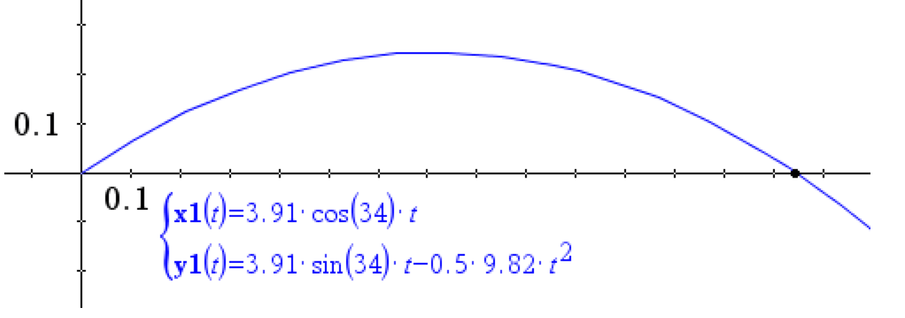
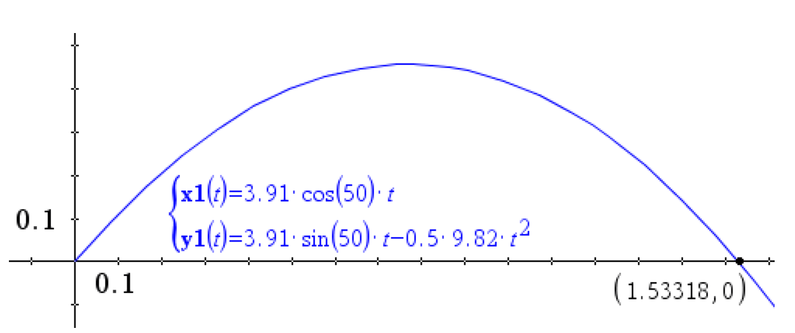
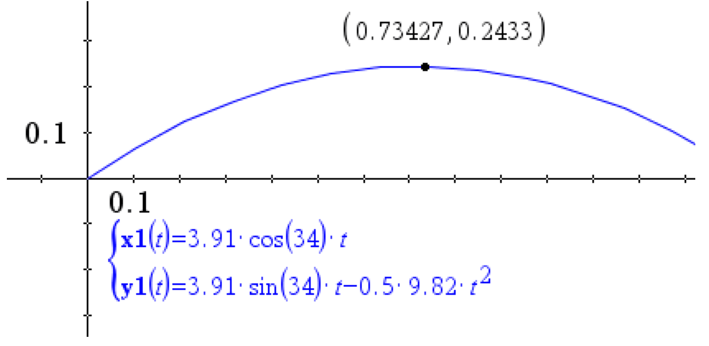
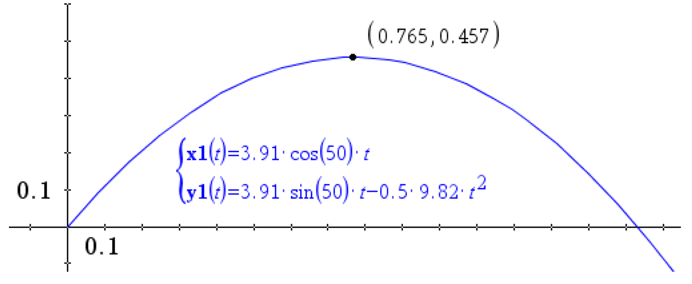
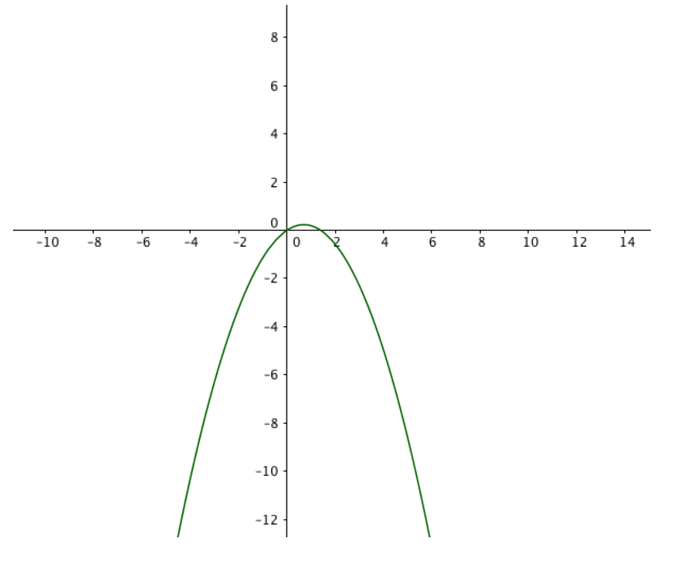
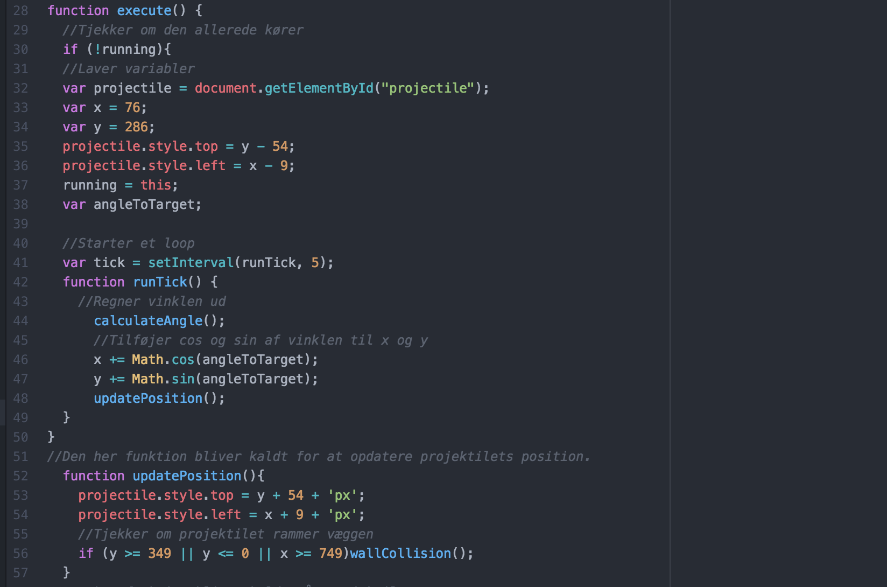
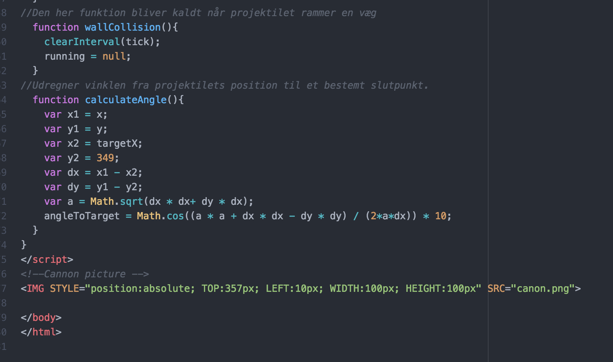

Informationer om opgaven
Elever: Rasmus Bo Dybdahl, Michael Maurer, Peter Schierbech og Ludvig Sørensen
Lærer: Ole Rahn Rasmussen, Simon Levinsen og Karl G Bjarnason
Fag: Matematik, Fysik og IT
Dato: 21/12 - 2016
Link til download af pdf opgave: Download
Formålet med opgaven
I skal lave forsøg hvor formålet er at undersøge om der er overensstemmelse mellem teori og praksis for kast med kastekanon ved forskellige vinkler.
Udførelse af forsøg
Vi udførte to seperate skrå kast, et med en vinkel på 34$^{\circ}$ og et med en vinkel på 50$^{\circ}$. Resultaterne for begge forsøg, kan ses i dette afsnit:
Det første skrå kast - 34$^{\circ}$
Opstil kanon og mål kastevinklen α
Her er den video vi filmet, og indsatte i logger pro:
Her er resultaterne vi fik fra logger pro:

Mål kastevidde og tid for kastevidde – og mål samtidig eller ved et sammenligneligt kast også stighøjden (banens største højde). Brug eks. Logger Pro til dette formål.
Kastevidden kan vi aflæse i skemaet ovenover:
$x(t)=1,191 m$
Tiden for kastevidden kan vi også aflæse ud fra værdierne i skemaet ovenover:
$t=0,367 s$
Benyt nu den målte værdi af kastevidden til ud fra udtrykket \(x(t)=v_0· cos(α) · t\)
$x(t)=1,191 m$
$t=0,367 s$
$α=34^{\circ}$
$1,191 m=v_0· cos(34^{\circ}) · 0,367 s$
$v_0 = {{x(t)} \over {cos(α) · t}}$
$v_0={{1,191 m} \over {cos(34°) · 0,367 s}} =3.9144566121749961 {m \over s} \approx 3.91 {m \over s}$
I et skråt kast er der teoretisk set symmetri, så \(t_{stighøjde} = {1 \over 2} · t_{kastevidde}\)
Sammenlign nu den målte værdi af stighøjden med den værdi som indsættelse i udtrykket
\(y(t)=v_0 · sin(α) · t - {1 \over 2} · g · t^2\), ved indsættelse af \(t=t_{stighøjde}\)
$y(t)=3,91 m/s · sin(34)·(0.5·0,367s)-{1\over2}·9,82 m/s^2·(0,5·0,367s)^2$
$y(t)=0,235882 m$
Beregn procentvis afvigelse
Tabelværdien vi fik var 0,194 m.
$Afvigelse=(måltværdi-tabelværdi) \over tabelværdi · 100$
$Afvigelse={0,235882-0,1940 \over 0,194} · 100$
$Afvigelse=21,6 \%$
Det andet skrå kast - 50$^{\circ}$
Opstil kanon og mål kastevinklen α
Her er den video vi filmet, og indsatte i logger pro:
Her er resultaterne vi fik fra logger pro:

Mål kastevidde og tid for kastevidde – og mål samtidig eller ved et sammenligneligt kast også stighøjden (banens største højde). Brug eks. Logger Pro til dette formål.
Kastevidden kan vi aflæse i skemaet ovenover:
$x(t)=1,1641 m$
Tiden for kastevidden kan vi også aflæse ud fra værdierne i skemaet ovenover:
$t=0,534 s$
Benyt nu den målte værdi af kastevidden til ud fra udtrykket \(x(t)=v_0· cos(α) · t\)
$x(t)=1,1641 m$
$t=0,534 s$
$α=50^{\circ}$
$1,1641 m=v_0· cos(50^{\circ}) · 0,534 s$
$v_0 = {{x(t)} \over {cos(α) · t}}$
$v_0={{1,1641 m} \over {cos(50°) · 0,534 s}} =3,3914196757432735 {m \over s} \approx 3.91 {m \over s}$
I et skråt kast er der teoretisk set symmetri, så \(t_{stighøjde} = {1 \over 2} · t_{kastevidde}\)
Sammenlign nu den målte værdi af stighøjden med den værdi som indsættelse i udtrykket
\(y(t)=v_0 · sin(α) · t - {1 \over 2} · g · t^2\), ved indsættelse af \(t=t_{stighøjde}\)
$y(t)=3,91 m/s · sin(50)·(0.5·0,534s)-{1\over2}·9,82 m/s^2·(0,5·0,534s)^2$
$y(t)=0,4497 m = 0,45 m$
Beregn procentvis afvigelse
Tabelværdien vi fik var 0,328 m.
$Afvigelse=(måltværdi-tabelværdi) \over tabelværdi · 100$
$Afvigelse={0,45-0,328 \over 0,328} · 100 =37,195121951%=37,2\%$
$Afvigelse=37,2\%$
Særskilt fysik bearbejdning
Gør rede for at bevægelserne i det skrå kast lodret og vandret kan ses hhv. som bevægelser med konstant acceleration og konstant hastighed.
Bevægelserne i det skrå kast er givet ud fra Newtons love. I det skrå kast ses der bort fra luftmodstanden, hvilket resulterede i at der ikke er nogen påvirkning af kræfter i den vandrette retning. Da Newtons første lov fortæller at et legeme, der ikke bliver påvirket af nogen kræfter, enten ligger stille er har en konstant hastighed, kan vi konkludere at vi i den vandrette retning må have en konstant hastighed, da vi ikke kan ligge stille på grund af $v_0.$ I den lodrette retning bliver kuglen påvirket af tyngdekraften, der vil trække kuglen nedad. Ifølge Newtons anden lov, gælder at et legeme der er påvirket af en kraft vil blive accelereret. Tyngdekraften er den eneste kraft der påvirker kuglen og derfor må accelerationen være konstant. Acceleration er givet udfra $m · g => m·a$ altså kan vi her just fjerne massen i begge formler, hvilket giver os at $g$ (altså tyngdekraften) er lige med accelerationen. Dette er en konstant og dermed er den lodrette bevægelse i vores forsøg påvirket af konstant acceleration.
Brug ovenstående til at argumenterer hvorfor de generelle bevægelsesligningerne for et skråt kast er givet ved:
$x(t)=v_0 · cos(α) · t$
$y(t)=v_0 · sin(α) · t - {1 \over 2} · g · t^2$
Bevægelse med konstant hastighed er givet ved udtrykket:
$s=v·t$
Dette fortæller altså at der kræves en hastighed og tid. I udtrykket for vores forsøgs x-retning, skal dette altså følge denne tankegang. Det gør det også, bortset fra at vi her har tilføjet $cos(⍺)$, som fortæller at vi her har med x-retning at gøre.
I den lodrette retning skal tages brug af udtrykket for bevægelse med konstant acceleration.
$s={1 \over 2} · a · t^2 + v_0 · t + s_0$
I vores forsøg har vi valgt at starte i punkt nul, derfor kan vi eliminere $s_0$ fra formlen. Derudover kan der ses, at vores udtryk faktisk er det samme, men bare opsat omvendt:
$s={1 \over 2} · a · t^2 + v_0 · t <=> s=v_0 · t + {1 \over 2} · a · t^2$
Da vi tidligere har defineret a=g kan dette også indsættes i stedet for. Derudover er det vigtigt med fortegnet, eftersom at der her sker en negativ påvirkning fra tyngdekraften, så derfor skal det ændre fra plus til minus.
$s=v_0 · t - {1 \over 2} · g · t^2$
Den allersidste del er defineret ud fra y-komposanten af $v_0$, hvilket er $v_0 · sin(⍺)$. derfor skal dette nu tilsidst indsættes og dermed har vi den generelle bevægelsesligning for y:
$y(t)=v_0 · sin(⍺) · t - {1 \over 2} · g · t^2$
Særskilt matematik bearbejdning
Gør rede for parameterkurver.
første kast med vinkel på 34 grader
$x(t)=3,91 {m \over s} · cos(34)·t$
$y(t)=3,91 {m \over s} · sin(34) ·t - {1 \over 2} · 9,82 · t^2$
Andet kast med vinkel på 50 grader
$x(t)=3,91 {m \over s} · cos(50)·t$
$y(t)=3,91 {m \over s} · sin(50) ·t-{1 \over 2}·9,82·t^2$
Udled hvordan man kan finde et udtryk for kastelængden ud fra de generelle bevægelsesligninger.
Kastelængden har den betingelse at $y(t)$ må være lige med nul, da kastelængden svarer til nedfaldspunktet. Gennem dette kan tiden(t) isoleres og når denne værdi er fundet, kan den bestemte værdi for tiden indsættes i funktionen af $x(t)$.
$0=V_0 · sin(α) · t - {1 \over 2} · g · t^2$
$0=3,91·sin(34)·t-{1 \over 2}·9.82·t^2$
$0=2,186·t-4,91·t^2$
For at isolerer t sættes der t som fællesfaktor rundt om ligningen.
$0=t(V0·sin(⍺)-4,91·t)$
Her er en af de to faktorer nødt til at give 0, da udtrykket samlet set skal give 0, og derfor må en af delene i gangestykket give 0. Altså:
$0=t \vee 0=V_0·sin(⍺)-4,91·t$
Det er altså nu muligt at finde frem til t:
$4,91t=V_0·sin(⍺)$
${4,91t \over 4,91}={V0·sin(⍺) \over 4,91}$
Således finder man tiden, og dette kan så indsættes i funktionen x(t).
$x(t)=V_0·cos(⍺)·{V_0·sin(⍺) \over {1 \over 2}·g}={V_0^2·2·cos(⍺)·sin(⍺) \over g}$
Udtrykket kan isoleres endnu mere, da vi ved at:
$2·cos(⍺)·sin(⍺)=sin(2·⍺)$
Derfor må slutudtrykket for kastelængden være:
$x(t)={V_0^2·sin(2·⍺) \over g}$
Dette stemmer også overens med enhederne:
${m/s^2 \over m/s^2}=m$
Vi ender altså ud med meter og det stemmer overens med af vi skal finde en længde. Derudover kan vi med dette udtryk bevise, hvorfor kastevinklen 45 grader er den mest effektive. Hvis man indsætter 45 grader som vinklen alpha, ganges dette med to og giver derfor 90 grader. Når man tager sinus til 90 grader fås 1, hvilket er den højeste værdi der kan fås og derfor den mest effektive kastevinkel.
Vi kan nu prøve at indsætte vores vinkler i formlen og se visuelt om det stemmer overens med kastelængden. I første forsøg havde vi en vinkel på 34 grader.
${x(t)=3,91^2·sin(2·34) \over 9,82}$
$x(t)=1,44347 m$
punktet der indsættes er derfor (1,44347 ; 0)
Som der kan ses på billedet nedenfor stemmer dette overens med kastelængden:

I andet forsøg havde vi en vinkel på 50 grader.
${x(t)=3,91^2·sin(2·50) \over 9,82}$
$x(t)=1,44347 m$
Kastelængden for andet forsøg må derfor være 1,53318 m. Dette kan kontrolleres med at indsættes funktionen og punktet (1,53318 ; 0).

Brug ovenstående til at argumenterer hvorfor de generelle bevægelsesligningerne for et skråt kast er givet ved:
Udled ved differentialregning hvordan man finder et udtryk for toppunktet ud fra de generelle bevægelsesligninger.
Først opskrives begge funktioner som differentieret, herefter forkortes de:
$x'(t)=3,2415·1·t^{1-1}$
$y'(t)=2,186·t^{1-1}-4,91·2·t^{2-1}$
De to differentierede funktioner ender derfor således ud:
$x'(t)=3,2415$
$y'(t)=2,186-9,82t$
Det gælder for at i netop toppunktet skal tangentens hældning være lige med nul.
$0=2,186-9,82t$
Så gælder det om at isolerer tiden
${9,82t \over 9,82} = {2,186 \over 9,82}$
$t=0,2265$
Nu da vi har fundet tiden for toppunktet kan dette nu indsættes i de to originale funktioner for det skrå kast. Altså:
$x(t)=3,91 m/s · cos(34)·0,2265$
$y(t)=3,91 m/s · sin(34) ·0,2265 - {1 \over 2} · 9,82 · 0,2265^2$
$x(t)=0.734$
$y(t)=0.243$
Disse to værdier må derfor være punktet for toppunktet. Dette kan ses på billedet nedenfor, der viser en tegning af det skrå kast:

Dette for første forsøg med en affyringsvinkel på 34 grader, nu vil vi kigge på det andet forsøg, med en affyringsvinkel på 50 grader. Endnu en gang starter vi med at differentiere udtrykket for de to funktioner og derefter forkorte dem:
$x'(t)=2,51·1·t^{1-1}$
$y'(t)=2,99·t^{1-1}-4,91·2·t^{2-1}$
Det endelige udtryk for de enkelte er derfor:
$x'(t)=2,51$
$y'(t)=2,99-9,82t$
Nu skal der ligesom i det andet forsøg sættes tangentens hældning til 0, da dette må betyde vi befinder os i toppunktet.
$0=2,99-9,82t$
Nu skal tiden(t) isoleres:
$9,82t=2,99$
${9,82t \over 9,82}={2,99 \over 9,82}$
$t=0.304481$
Tiden kan nu indsættes i de to originale funktioner for så at finde toppunktet:
$x(t)=3,91 m/s · cos(50)·0,304481$
$y(t)=3,91 m/s · sin(50) ·0,304481-{1 \over 2}·9,82·0,304481^2$
$x(t)=0,765$
$y(t)=0.457$
Nu kan punktet tegnes ind i TI-Nspire for at bevise, at dette punktet rent faktisk er toppunktet. Som det kan ses, så passer vores udregninger altså meget godt ifølge skitseringen.

Udled ved differentialregning, at bevægelsesligningerne giver samme nedslagsvinkel som affyringsvinkel.
I tidligere opgave isolerede vi tiden for kastelængde, hvilket gav:
$t_{kastelængde}={{V_0·sin(⍺)} \over 4,91}$
Ved første forsøg er tiden for kastelængde:
${{3,91·sin(34)} \over 4,91}=0,4453$
Differentiering fås:
$x(t)=3,241$
$y(t)=2,186-9,82t => -2,187$
Med disse to værdier kan vi nu finde hastigheden ved nedslagspunktet, for at bevise at hastigheden også er den samme ved start som slut. Dog ved indsættelse skal y(t)’s fortegn til positivt.
$\sqrt{3,241^2+2,187^2}=3,91 m/s$
Det er altså nu bevist at sluthastigheden er den samme som starthastigheden. Med cosinus kan vi nu finde nedslagsvinklen:
$cos^-1({3,241 \over 3,91})=34,01^{\circ}$
Ved første forsøg er nedslagsvinklen altså $34^{\circ}$, ligesom den var ved affyring.
Ved bevis for andet forsøg med en vinkel på $50^{\circ}$, efterviser vi ikke om sluthastigheden stemmer overens, da vi ovenover har vist, hvordan dette udføres.
$x'(t)=3,91·cos(50)·t => 2,5133$
$cos^-1({2,5133 \over 3,91})=49,99 $
I vores andet forsøg er nedslagsvinklen altså også den samme som affyringsvinklen.
Benyt forsøgsværdier for kastevidde, og regn baglæns i udtrykket for kastevidde – kontrollér om I får en rimelig ens værdi af $v_0$ ved alle forsøgene.
$x(t)={{V_0^2·sin(2·⍺)} \over g}$
i første forsøg målte logger pro længden til at være 1,191 meter. Da vi tidligere fandt den teoretiske kastelængde til at være 1,44 meter, kan der allerede nu konkluderes, at der v0 må have en vis afvigelse.
$x(t)·g={V_0^2·sin(2·⍺) \over g·g} => x(t)·g=V_0^2·sin(2·⍺)$
${x(t)·g \over sin(2·⍺)}=V_0$
${1,191·9,82 \over sin(2·34)}=3,55164 m/s$
Hastigheden i første forsøg gennem tilbageregning er derfor 3,55 m/s.
${1,174·9,82 \over sin(2·50)}=3,42148 m/s$
Hastigheden i andet forsøg gennem tilbageregning er derfor 3,42 m/s.
De to hastigheder er derfor rimelig tæt på hinanden, kun med en forskel på cirka 0,13.
Benyt forsøgsværdier for stighøjde, og regn baglæns i udtrykket for stighøjde – kontrollér om I får en rimelig ens værdi af $v_0$ ved alle forsøgene.
Først isoleres tiden fra den differentierede ligning for y(t). Her gælder det for y’(t) at den skal være nul, da hældningen således vil være nul for y(t) og derfor kan vi konkludere, at vi er i toppunktet.
$t={v_0 · sin(⍺) \over g}$
Dette værdi for t kan nu indsættes i den originale funktion for y(t) og ved reducering, fås den generelle udtryk for stighøjde.
$y(t)=v0 · sin(α) · {v0 · sin(⍺) \over g} - {1 \over 2} · g · ({v_0 · sin(⍺) \over g})^2$
$y(t)={v_0·sin^2(⍺) \over g}-{1 \over 2}·g·({v_0^2·sin^2(⍺) \over g^2}) => {v_0·sin^2(⍺) \over g}-{v_0^2·sin^2(⍺) \over 2·g}$
For at komme videre herfra, skal der findes en fællesnævner:
$y(t)={2·v_0^2·sin^2(⍺) \over 2·g} - {v_0^2·sin^2(⍺) \over 2·g}$
Stighøjden for y er derfor:
$y(t)={v_0^2·sin^2(⍺) \over 2·g}$
Nu med dette generelle udtryk, kan der regnes baglæns og dermed findes v0:
$y(t)·2·g=v_0^2·sin^2(⍺)$
${y(t)·2·g \over sin^2(⍺)}=v_0^2 => \sqrt{y(t)·2·g \over sin^2(⍺)}=v_0$
Dette udtryk for $v_0$ kan nu udregnes for de to forsøg, og kontrolleres om der er rimelig ens værdi. Ved første forsøg, var vinklen 34 grader og stighøjden 0,2433 m:
$\sqrt{0,2433·2·9.82 \over sin^2(34)}=3,91 m/s$
Her stemmer v0 overens helt overens med de tidligere regnet værdier. Ved andet forsøg havde vi en vinkel på 50 grader og en stighøjde på 0,457 m:
$\sqrt{0,457·2·9.82 \over sin^2(50)}=3,19 m/s$
Her stemmer $v0$ overnes med de tidligere værdier, dog med en afvigelse på cirka 0,72.
Vis ved at eliminere parameteren $t$, at parameterkurven for et skråt kast har form som en parabel
Herunder har vi lavet et ligningssystem der fjerner parameteren t, og viser at det skrå kast har form som en parabel:
$x(t)=v_0 · cos(α) · t$
$y(t)=v0 · sin(α) · t - 12 · g · t2$
${x \over v_0 · cos(α)}=t$
$y(x)=v_0 · sin(α) · {x \over v_0 · cos(α)} - {1 \over 2} · g · ({x \over v_0 · cos(α)})^2$
${x \over v_0 · cos(α)}=t$
$y(x)=v_0 · sin(α) · {x \over v_0 · cos(α)} - {1 \over 2} · g · {x^2 \over v_0^2 · cos(α)^2}$
${x \over v_0 · cos(α)}=t$
$y(x)={v_0 · sin(α) · x \over v_0 · cos(α)} - {g· x^2 \over 2 · v_0^2 · cos(α)^2}$
${x \over v_0 · cos(α)}=t$
$y(x)={sin(α) · x \over cos(α)} - {g· x^2 \over 2 · v_0^2 · cos(α)^2}$
${x \over v_0 · cos(α)}=t$
$y(x)=tan(α) · x - {g \over 2 · v_0^2 · cos(α)^2} · x^2$
Vi kan bevise dette ved at indsætte nogle værdier (i det her tilfælde, bruger vi de værdier fra det skrå kast på 34°):
$y(x)=tan(34) · x - {9,82 \over 2 · 3.91^2 · cos(34)^2} · x^2$
Hvis vi indsætter det i GeoGebra, får vi dette resultat:

Informationsteknologi-delen
Herunder er billeder af koden, der får vores IT-produkt til at virke
  Jeg startede ud med at lave en firkant som baggrund. Jeg satte derefter et billede af en kanon og en kanonkugle. Så lavede jeg en funktion der ville ændre en x og y variabel hver gang den blev kørt, og så gjorde jeg så kanonkugle billedets blev sat til x og y variablerne. Nu havde jeg en kanonkugle som jeg kunne ændre position på. Men jeg skulle have den til at flyve ordentligt. Så jeg brugte et par matematiske formler til at udregne kursen til et bestemt punkt. Da jeg så fandt vinklen kunne jeg bare finde sin og cos af den, og tilføje det til x og y. Nu vil kanonkuglen flyve mod det punkt som man har valgt. Derefter lavede jeg en knap, som ville starte funktionen som kørte animationen og en knap hvor brugeren ville kunne ændre x koordinatet.Link til vores IT-produkt
SO-delen
Fagene fungere godt sammen i og med, at vi starter ud i fysik ved at opsætter et forsøg på basis af teorien bag det skrå kast. Herefter kan de fundne værdier fra forsøgene tages videre til det matematiske perspektiv, hvor vi her kan arbejde videre med data og hermed få en teoretisk viden for forsøget. Med dette kan man føre videre til informationsteknologi, hvor vi her formår at visualisere vores arbejde, på en måde så det bliver mere overskueligt for andre og derved fungere som et godt kommunikativt middel.